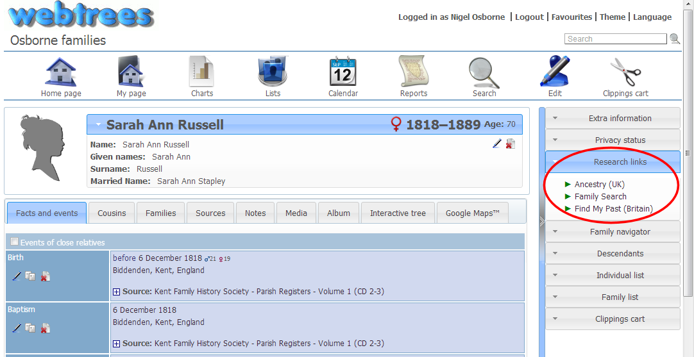

A sidebar module that provides quick links to popular research web sites, using the individuals name as the search reference
This is designed to generate only a very basic search, using little more than the individual's name. Any additional filtering will need to be done at the research site after it generates an initial search from this link. It would be technically possible to add more filter options to the links, but they are never likely to exactly suit all situations, so it is better to keep it "simpl".
Additional links can be added easily to access other sites , or existing ones removed, or you can add your own extra filtering to existing links.
IMPORTANT NOTE: If the site linked to requires registration, these links will not automatically log you or your site users in. You will need to manage that separately yourself. Some research sites are subscription or pay-per-view only.
Updates and bug-fixes will be announced on the Simpl_add-ons blog pages, and on Twitter.
- Unzip the files and upload them to the webtrees /modules_vX/ folder on your web server. (Note: "X" = "3" at the time of writing this, but may change in future releases)
- Login to webtrees as administrator, go to Administration
 Modules, and find the module. It will be called "Research links". Check it has a tick for "Enabled"
Modules, and find the module. It will be called "Research links". Check it has a tick for "Enabled" - Click SAVE, to complete the installation.
- OPTIONAL. You can also go to AdministrationModules/Sidebar and change the position of this sidebar module relative to all others. Simply drag and drop the Research links item up or down the list as required. You can also adjust which groups of users you allow to see this module. Don't forget to click SAVE once everything on this screen is set correctly.
The only setup required is if you wish to add new links (plugin files) or remove existing ones.
- Adding new links
- Three (or 4) steps are involved in creating a new link or plugin file
- Take a copy of one of the existing files and rename it. For example copy /simpl_research/plugins/ancestryuk.php to a new file /simpl_research/plugins/ancestryca.php to create a link that will search Ancestry's Canadian site.
- In the new file, change the class (line 33) to match the file name (e.g. class ancestryuk_plugin becomes class ancestryca_plugin); and change the name of the link (line 35) to something suitable (e.g. return 'Ancestry (UK)'; becomes return 'Ancestry (Canada)';).
- At the research site you are linking to, perform a simple name only search, and note the URL the search generates. Use this to change the output of the link in your new plugin file, the section starting at line 51 return $link = ...... taking careful note where the given names ($givn) and surname ($surn) need to be inserted.
- OPTIONAL: If you want to include a small icon next to the link name (as the standard three do) just create or find an appropriate image. Save it in the /simpl_research/images/ folder. Then modify the pluging file (as in 2, above) to put that image name in line 39. The standard plugin images have the same name as their plugin file, but this is not strictly necessary. If there is no image, the default search icon from your webtrees theme will be used.
- Removing links you don't require
- To remove links, simply delete their plugin file. They will however be replaced if / when you upgrade the module, so you will need to remove them again at that time. An upgrade will not delete or change any new plugins you create.
If you do create your own plugin files, you are welcome to send them to me for inclusion in the next release of this module.
Any new language items use the same "WT_I18N::translate()" format but require additional translation files. Some are included with this module in it's "language" folder. For languages NOT included you have two options:
- You can translate them yourself using the process and any of the options in webtrees "custom translation" feature described here: Wiki: Custom translation, or
- you can email me the necessary translations. I will include them in the next release and if you wish supply you an immediate update for your own use. You can supply me the translation either in the form of a .po and compiled .mo file, or you can use the blank "en_US.po" file supplied in the modules' language/po_files/ folder. That is a simple text file you can edit in any text editor. Just add your translation for each item in it's empty "msgstr" line. Remember that certain phrases might need plural as well as singular versions or other variants.
NOTE: please be specific about your translation. Options such as "you can use xxxx or yyyy" to translate this" are not helpful. I don't have the knowledge of your language to make such a choice.
If you want to use a different set of translations to any supplied with this module you can do so either by changing the supplied .po/.mo files, or by deleting them and using your own custom translation file as described in 1. above.